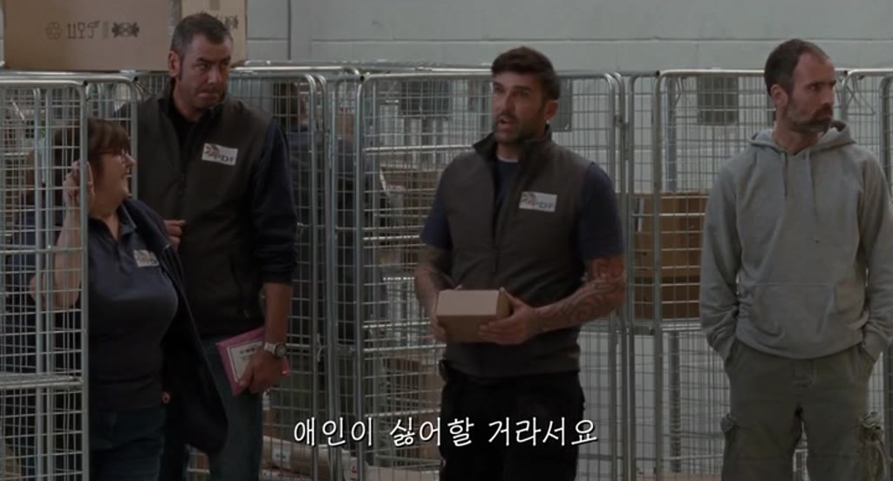

Image context
Search input:
WRITING IMAGES AND PICTURING TEXT AN ARCHITECTONIC PLAYGROUND BETWEEN DIGITAL MULTI-MODALITIES
Search mode: words Targeting: 1.5×
Selected image

Region multi — ['org', 'employed', 'custodial', 'rely', 'tattooed']
All regions
Region ascertain — ['stage', 'play', 'backstage', 'preaching'], ['stage', 'play', 'auctioned', 'preaching', 'playacting'], ['entered', 'exhibit'], ['layout', 'symbolism', 'overview'], ['symbolism', 'layout', 'overview'], ['manifesto', 'manifested', 'wantonly'], ['wantonly', 'mention'], ['redolent', 'rind'], ['redolent', 'documentation'], ['gentlemanly', 'splurge'], ['gentlemanly', 'splurge'], ['piano', 'itching', 'pinch'], ['pressed', 'pinch'], ['testicle', 'grapefruit', 'rind'], ['gentlemanly', 'grapefruit'], ['backstage', 'arena', 'playacting', 'stage', 'piano', 'layout'], ['layout', 'production', 'play', 'stage', 'contestant', 'arena', 'playacting'], ['overview', 'layout', 'arena'], ['overview', 'arena', 'layout'], ['overview', 'ramp', 'arena', 'layout']
- assets/film_frames_300/Dogville_-_Lars_von_Trier_(2003)__e0c0a34706__t08390.000__tc02-19-50.000__w300.jpg — ['stage', 'play', 'backstage', 'preaching']
- assets/film_frames_300/Fear_and_Loathing_in_Las_Vegas_-_Terry_Gilliam_(1998)__a45613fca2__t01819.000__tc00-30-19.000__w300.jpg — ['stage', 'play', 'auctioned', 'preaching', 'playacting']
- assets/film_frames_300/Dogville_-_Lars_von_Trier_(2003)__32871b20b5__t04747.000__tc01-19-07.000__w300.jpg — ['entered', 'exhibit']
- assets/film_frames_300/Dogville_-_Lars_von_Trier_(2003)__7028e06bd2__t01483.000__tc00-24-43.000__w300.jpg — ['layout', 'symbolism', 'overview']
- assets/film_frames_300/Dogville_-_Lars_von_Trier_(2003)__f02912549f__t03090.000__tc00-51-30.000__w300.jpg — ['symbolism', 'layout', 'overview']
- assets/film_frames_300/28_Days_Later_-_Danny_Boyle_(2002)__648b39db22__t06500.000__tc01-48-20.000__w300.jpg — ['manifesto', 'manifested', 'wantonly']
- assets/film_frames_300/La_Dolce_Vita_-_Federico_Fellini_(1960)__f5976c64d1__t00100.000__tc00-01-40.000__w300.jpg — ['wantonly', 'mention']
- assets/film_frames_300/Bronson_-_Nicolas_Winding_Refn_(2008)__13f4ec85df__t05200.000__tc01-26-40.000__w300.jpg — ['redolent', 'rind']
- assets/film_frames_300/Under_the_Skin_-_Jonathan_Glazer_(2013)__f9c63ce140__t00040.000__tc00-00-40.000__w300.jpg — ['redolent', 'documentation']
- assets/film_frames_300/Django_Unchained_-_Quentin_Tarantino_(2012)__5ca0d37a73__t06117.000__tc01-41-57.000__w300.jpg — ['gentlemanly', 'splurge']
- assets/film_frames_300/Django_Unchained_-_Quentin_Tarantino_(2012)__3c2618d9e2__t06181.000__tc01-43-01.000__w300.jpg — ['gentlemanly', 'splurge']
- assets/film_frames_300/Dogville_-_Lars_von_Trier_(2003)__b48a3c2216__t04948.000__tc01-22-28.000__w300.jpg — ['piano', 'itching', 'pinch']
- assets/film_frames_300/28_Days_Later_-_Danny_Boyle_(2002)__f8424a7d80__t00770.000__tc00-12-50.000__w300.jpg — ['pressed', 'pinch']
- assets/film_frames_300/A_Clockwork_Orange_-_Stanley_Kubrick_(1971)__b346f32279__t05460.000__tc01-31-00.000__w300.jpg — ['testicle', 'grapefruit', 'rind']
- assets/film_frames_300/There_Will_Be_Blood_-_Paul_Thomas_Anderson_(2007)__cc476e2b0f__t08394.000__tc02-19-54.000__w300.jpg — ['gentlemanly', 'grapefruit']
- assets/film_frames_300/Dogville_-_Lars_von_Trier_(2003)__004c1410fd__t04954.000__tc01-22-34.000__w300.jpg — ['backstage', 'arena', 'playacting', 'stage', 'piano', 'layout']
- assets/film_frames_300/Dogville_-_Lars_von_Trier_(2003)__8d99ecc71b__t02762.000__tc00-46-02.000__w300.jpg — ['layout', 'production', 'play', 'stage', 'contestant', 'arena', 'playacting']
- assets/film_frames_300/Black_Dog_2024_1080p_Chinese_WEB-DL_HC_HVEC_x265_BONE__bde38d9fe6__t01490.000__tc00-24-50.000__w300.jpg — ['overview', 'layout', 'arena']
- assets/film_frames_300/Thelma_-_Joachim_Trier_(2017)__57dbd1b281__t00260.000__tc00-04-20.000__w300.jpg — ['overview', 'arena', 'layout']
- assets/film_frames_300/Once_Upon_a_Time_in_Anatolia_-_Nuri_Bilge_Ceylan_(2011)__a9cf85967a__t08870.000__tc02-27-50.000__w300.jpg — ['overview', 'ramp', 'arena', 'layout']
Region edited — ['menu', 'vendor', 'ordering', 'takeout', 'kiosk', 'decal', 'guidebook'], ['decal', 'guidebook', 'takeout', 'ordering', 'menu', 'kiosk', 'vendor'], ['embroidery', 'vibrant', 'colorful', 'multiplication'], ['embroidery', 'colorful', 'multiplication', 'vibrant'], ['tailgating', 'roadblock', 'raced', 'lancer', 'scraping'], ['tailgating', 'parked', 'lancer', 'competitor', 'scraping', 'raced', 'sneaker'], ['roadblock', 'competitor', 'cabby', 'raced', 'parked'], ['beverage', 'sneaker', 'red', 'soda'], ['soda', 'pattering', 'red'], ['bankbook', 'boxed', 'package', 'guidebook', 'lunchbox'], ['jumpy', 'pattering', 'competitor', 'multiplication'], ['sneaker', 'midget', 'jumpy'], ['package', 'bankbook', 'lunchbox', 'kiosk', 'vendor', 'takeout'], ['decal', 'stencil', 'indicator', 'sidestep'], ['juvenile', 'tat', 'symbolized', 'vandalism', 'stencil', 'decal'], ['cabby', 'decal', 'tailgating', 'sneaker', 'midget', 'juvenile'], ['marker', 'decal', 'guidebook', 'inflatable'], ['gook', 'raced', 'bluer', 'decal', 'lancer', 'parked'], ['serviced', 'parked', 'decal', 'scraping'], ['serviced', 'vandalism', 'decal', 'parked']
- assets/film_frames_300/Pierrot_le_Fou_-_Jean-Luc_Godard_(1965)__bbbea17722__t02088.000__tc00-34-48.000__w300.jpg — ['menu', 'vendor', 'ordering', 'takeout', 'kiosk', 'decal', 'guidebook']
- assets/film_frames_300/Pierrot_le_Fou_-_Jean-Luc_Godard_(1965)__ad7cd4125c__t02085.000__tc00-34-45.000__w300.jpg — ['decal', 'guidebook', 'takeout', 'ordering', 'menu', 'kiosk', 'vendor']
- assets/film_frames_300/Hana-bi_(Fireworks)_-_Takeshi_Kitano_(1997)__5a1c394b6a__t00085.000__tc00-01-25.000__w300.jpg — ['embroidery', 'vibrant', 'colorful', 'multiplication']
- assets/film_frames_300/Hana-bi_(Fireworks)_-_Takeshi_Kitano_(1997)__82c80c8380__t00090.000__tc00-01-30.000__w300.jpg — ['embroidery', 'colorful', 'multiplication', 'vibrant']
- assets/film_frames_300/Sonatine_-_Takeshi_Kitano_(1993)__a514e854b4__t03160.000__tc00-52-40.000__w300.jpg — ['tailgating', 'roadblock', 'raced', 'lancer', 'scraping']
- assets/film_frames_300/Hana-bi_(Fireworks)_-_Takeshi_Kitano_(1997)__789ac14ad5__t02453.000__tc00-40-53.000__w300.jpg — ['tailgating', 'parked', 'lancer', 'competitor', 'scraping', 'raced', 'sneaker']
- assets/film_frames_300/Tie_Me_Up_Tie_Me_Down_-_Pedro_Almodvar_(1990)__5eaa4e6767__t05093.000__tc01-24-53.000__w300.jpg — ['roadblock', 'competitor', 'cabby', 'raced', 'parked']
- assets/film_frames_300/Broken_Embraces_(Los_abrazos_rotos)_-_Pedro_Almodvar_(2009)__46dcf0d2b1__t02460.000__tc00-41-00.000__w300.jpg — ['beverage', 'sneaker', 'red', 'soda']
- assets/film_frames_300/Broken_Embraces_(Los_abrazos_rotos)_-_Pedro_Almodvar_(2009)__46dcf0d2b1__t02460.000__tc00-41-00.000__w300.jpg — ['soda', 'pattering', 'red']
- assets/film_frames_300/The_Hand_of_God_-_Paolo_Sorrentino_(2021)__1fa4e48fde__t07020.000__tc01-57-00.000__w300.jpg — ['bankbook', 'boxed', 'package', 'guidebook', 'lunchbox']
- assets/film_frames_300/The_Shining_-_Stanley_Kubrick_(1980)__3e07a393a6__t03440.000__tc00-57-20.000__w300.jpg — ['jumpy', 'pattering', 'competitor', 'multiplication']
- assets/film_frames_300/Fear_and_Loathing_in_Las_Vegas_-_Terry_Gilliam_(1998)__0c1af59d3b__t01978.000__tc00-32-58.000__w300.jpg — ['sneaker', 'midget', 'jumpy']
- assets/film_frames_300/Beau_Travail_-_Claire_Denis_(1999)__7c9746da90__t01840.000__tc00-30-40.000__w300.jpg — ['package', 'bankbook', 'lunchbox', 'kiosk', 'vendor', 'takeout']
- assets/film_frames_300/Dogville_-_Lars_von_Trier_(2003)__b81aa9c248__t06143.000__tc01-42-23.000__w300.jpg — ['decal', 'stencil', 'indicator', 'sidestep']
- assets/film_frames_300/Turkish_Delight_-_Paul_Verhoeven_(1973)__06f5a3b581__t03040.000__tc00-50-40.000__w300.jpg — ['juvenile', 'tat', 'symbolized', 'vandalism', 'stencil', 'decal']
- assets/film_frames_300/Hana-bi_(Fireworks)_-_Takeshi_Kitano_(1997)__d27a0aaf79__t02440.000__tc00-40-40.000__w300.jpg — ['cabby', 'decal', 'tailgating', 'sneaker', 'midget', 'juvenile']
- assets/film_frames_300/Hana-bi_(Fireworks)_-_Takeshi_Kitano_(1997)__8e417a203b__t04060.000__tc01-07-40.000__w300.jpg — ['marker', 'decal', 'guidebook', 'inflatable']
- assets/film_frames_300/A_Separation_-_Asghar_Farhadi_(2011)__7b4df122cc__t05680.000__tc01-34-40.000__w300.jpg — ['gook', 'raced', 'bluer', 'decal', 'lancer', 'parked']
- assets/film_frames_300/Hana-bi_(Fireworks)_-_Takeshi_Kitano_(1997)__3e100c033d__t04848.000__tc01-20-48.000__w300.jpg — ['serviced', 'parked', 'decal', 'scraping']
- assets/film_frames_300/Kikujiro_-_Takeshi_Kitano_(1999)__b187c8f070__t03988.000__tc01-06-28.000__w300.jpg — ['serviced', 'vandalism', 'decal', 'parked']
Region multi — ['texted', 'org', 'confessing', 'chatted', 'rely', 'accusing', 'carat', 'translating', 'whee'], ['rely', 'whee', 'holler', 'manager', 'translating', 'accusing', 'repairman'], ['translating', 'sympathized', 'caregiver', 'foreigner', 'holler', 'accusing', 'tattooed', 'manifest', 'rely'], ['symbolized', 'translating', 'sympathized', 'chatted', 'carat', 'texted', 'org', 'rely'], ['accusing', 'baggies', 'custodial', 'foreigner', 'rely', 'rebuttal', 'rugby', 'translating', 'repairman'], ['rugby', 'baggies', 'rely', 'accusing', 'foreigner', 'custodial', 'manager', 'translating', 'repairman'], ['accusing', 'foreigner', 'tutoring', 'translating', 'rely', 'tattooed', 'interrogate', 'intervention', 'manifest', 'caregiver', 'comer'], ['translating', 'memorise', 'caregiver', 'foreigner', 'symbolized', 'holler', 'accusing', 'rely'], ['chatting', 'caregiver', 'intervention', 'online', 'translating', 'interrogate', 'tutoring', 'rely'], ['texted', 'chatting', 'rely', 'translating', 'accusing', 'foreigner', 'tutoring', 'rebuttal'], ['symbolized', 'translating', 'rely', 'memorise', 'org'], ['org', 'rely', 'accusing', 'foreigner', 'employed', 'custodial', 'translating'], ['org', 'employed', 'custodial', 'rely', 'tattooed'], ['holler', 'lorry', 'member', 'accusing', 'rely', 'employment', 'helpline', 'chronicle', 'volunteer', 'foreigner', 'casualty'], ['texted', 'chatting', 'rely', 'accusing', 'foreigner', 'comer', 'translating', 'online'], ['foreign', 'lorry', 'foreigner', 'rely', 'org', 'helpline', 'manager', 'translating', 'rugby'], ['rely', 'manager', 'translating', 'accusing', 'comer', 'neighbourly', 'foreigner', 'foreign'], ['translating', 'rely', 'org', 'member', 'foreigner', 'advocating'], ['foreigner', 'accusing', 'rely', 'documentary', 'manager', 'translating', 'neighbourly'], ['rugby', 'manager', 'translating', 'advocating', 'helpline', 'foreigner', 'rely']
- assets/film_frames_300/Sorry.We.Missed.You.2019.HC.HDRip.XviD.AC3-EVO__a3c0b229e1__t00080.000__tc00-01-20.000__w300.jpg — ['texted', 'org', 'confessing', 'chatted', 'rely', 'accusing', 'carat', 'translating', 'whee']
- assets/film_frames_300/Sorry.We.Missed.You.2019.1080p.WEBRip.x264-YTS.LT__e4c45eb0ae__t01510.000__tc00-25-10.000__w300.jpg — ['rely', 'whee', 'holler', 'manager', 'translating', 'accusing', 'repairman']
- assets/film_frames_300/Sorry.We.Missed.You.2019.HC.HDRip.XviD.AC3-EVO__33b75bf9ec__t04460.000__tc01-14-20.000__w300.jpg — ['translating', 'sympathized', 'caregiver', 'foreigner', 'holler', 'accusing', 'tattooed', 'manifest', 'rely']
- assets/film_frames_300/Sorry.We.Missed.You.2019.1080p.WEBRip.x264-YTS.LT__0a192ff862__t00097.000__tc00-01-37.000__w300.jpg — ['symbolized', 'translating', 'sympathized', 'chatted', 'carat', 'texted', 'org', 'rely']
- assets/film_frames_300/Sorry.We.Missed.You.2019.1080p.WEBRip.x264-YTS.LT__b32b7b7cef__t01050.000__tc00-17-30.000__w300.jpg — ['accusing', 'baggies', 'custodial', 'foreigner', 'rely', 'rebuttal', 'rugby', 'translating', 'repairman']
- assets/film_frames_300/Sorry.We.Missed.You.2019.1080p.WEBRip.x264-YTS.LT__4220d445c1__t01049.000__tc00-17-29.000__w300.jpg — ['rugby', 'baggies', 'rely', 'accusing', 'foreigner', 'custodial', 'manager', 'translating', 'repairman']
- assets/film_frames_300/Sorry.We.Missed.You.2019.1080p.WEBRip.x264-YTS.LT__d14788da7c__t05112.000__tc01-25-12.000__w300.jpg — ['accusing', 'foreigner', 'tutoring', 'translating', 'rely', 'tattooed', 'interrogate', 'intervention', 'manifest', 'caregiver', 'comer']
- assets/film_frames_300/Sorry.We.Missed.You.2019.1080p.WEBRip.x264-YTS.LT__34995c9048__t02196.000__tc00-36-36.000__w300.jpg — ['translating', 'memorise', 'caregiver', 'foreigner', 'symbolized', 'holler', 'accusing', 'rely']
- assets/film_frames_300/Wheel_of_Fortune_and_Fantasy_-_Ryusuke_Hamaguchi_(2021)__f12f49ddd1__t02030.000__tc00-33-50.000__w300.jpg — ['chatting', 'caregiver', 'intervention', 'online', 'translating', 'interrogate', 'tutoring', 'rely']
- assets/film_frames_300/Sorry.We.Missed.You.2019.HC.HDRip.XviD.AC3-EVO__f519d75247__t02613.000__tc00-43-33.000__w300.jpg — ['texted', 'chatting', 'rely', 'translating', 'accusing', 'foreigner', 'tutoring', 'rebuttal']
- assets/film_frames_300/Sorry.We.Missed.You.2019.1080p.WEBRip.x264-YTS.LT__b137fbb11a__t02103.000__tc00-35-03.000__w300.jpg — ['symbolized', 'translating', 'rely', 'memorise', 'org']
- assets/film_frames_300/Sorry.We.Missed.You.2019.HC.HDRip.XviD.AC3-EVO__ba5e8ce0c6__t01514.000__tc00-25-14.000__w300.jpg — ['org', 'rely', 'accusing', 'foreigner', 'employed', 'custodial', 'translating']
- assets/film_frames_300/Sorry.We.Missed.You.2019.HC.HDRip.XviD.AC3-EVO__415e849d84__t01633.000__tc00-27-13.000__w300.jpg — ['org', 'employed', 'custodial', 'rely', 'tattooed']
- assets/film_frames_300/Sorry.We.Missed.You.2019.HC.HDRip.XviD.AC3-EVO__38aa1fc495__t02050.000__tc00-34-10.000__w300.jpg — ['holler', 'lorry', 'member', 'accusing', 'rely', 'employment', 'helpline', 'chronicle', 'volunteer', 'foreigner', 'casualty']
- assets/film_frames_300/Parasite_-_Bong_Joon-ho_(2019)__f50d0b2842__t02464.000__tc00-41-04.000__w300.jpg — ['texted', 'chatting', 'rely', 'accusing', 'foreigner', 'comer', 'translating', 'online']
- assets/film_frames_300/Sorry.We.Missed.You.2019.1080p.WEBRip.x264-YTS.LT__d1a4b8447b__t01900.000__tc00-31-40.000__w300.jpg — ['foreign', 'lorry', 'foreigner', 'rely', 'org', 'helpline', 'manager', 'translating', 'rugby']
- assets/film_frames_300/Sorry.We.Missed.You.2019.1080p.WEBRip.x264-YTS.LT__bfcf9b81d0__t01982.000__tc00-33-02.000__w300.jpg — ['rely', 'manager', 'translating', 'accusing', 'comer', 'neighbourly', 'foreigner', 'foreign']
- assets/film_frames_300/Happy_Hour_-_Ryusuke_Hamaguchi_(2015)__75a1adeeda__t14360.000__tc03-59-20.000__w300.jpg — ['translating', 'rely', 'org', 'member', 'foreigner', 'advocating']
- assets/film_frames_300/Sorry.We.Missed.You.2019.1080p.WEBRip.x264-YTS.LT__23cec94f3d__t01850.000__tc00-30-50.000__w300.jpg — ['foreigner', 'accusing', 'rely', 'documentary', 'manager', 'translating', 'neighbourly']
- assets/film_frames_300/Sorry.We.Missed.You.2019.1080p.WEBRip.x264-YTS.LT__289ec99945__t01928.000__tc00-32-08.000__w300.jpg — ['rugby', 'manager', 'translating', 'advocating', 'helpline', 'foreigner', 'rely']
Region pile — ['sitter', 'bouncer', 'documentary', 'striker', 'dong', 'hurling', 'manager', 'melon', 'rugby'], ['bouncer', 'recognise', 'sleight', 'stammering', 'creed', 'paedophile', 'afflicted', 'alderman', 'discussing', 'hurling'], ['hostage', 'interrogate', 'creed', 'recognise', 'transcription', 'sleight', 'afflicted', 'machinist'], ['sitter', 'hacking', 'chronicle', 'melon', 'transcription', 'machinist', 'interrogate', 'burglarized'], ['supervising', 'rugby', 'manager', 'dong', 'striker', 'documentary'], ['cuckoo', 'sleight', 'thirteen', 'stammering', 'junkie', 'paedophile', 'afflicted', 'alderman', 'discussing', 'hurling'], ['casualty', 'thirteen', 'hurling', 'inspect', 'striker', 'tagging', 'authorization', 'bouncer'], ['machinist', 'custodial', 'creed', 'supervising', 'inspect', 'scrum'], ['hurling', 'casualty', 'bouncer', 'stoke', 'chronicle', 'tagging', 'paedophile'], ['thirteen', 'hacking', 'creed', 'sleight', 'hostage', 'afflicted', 'junkie', 'burglarized'], ['buzzard', 'hurling', 'rugby', 'confrontation', 'scrum', 'thirteen', 'cuckoo'], ['custodial', 'fury', 'creed', 'casualty', 'custodian', 'confrontation', 'bouncer', 'afflicted', 'machinist'], ['stoke', 'cuckoo', 'thirteen', 'hurling', 'stammering', 'neath', 'buzzard'], ['melon', 'afflicted', 'paedophile', 'skip', 'junkie', 'thirteen', 'stammering'], ['burglarized', 'hoarded', 'sleight', 'afflicted', 'machinist', 'looter'], ['hoarded', 'looter', 'burglarized', 'machinist', 'afflicted', 'sleight'], ['hurling', 'neath', 'stammering', 'cuckoo', 'chronicle', 'pederast'], ['fury', 'bod', 'bouncer', 'creed', 'hurling', 'buzzard', 'machinist', 'afflicted'], ['hurling', 'ups', 'sleight', 'afflicted'], ['hurling', 'afflicted', 'ups', 'sleight']
- assets/film_frames_300/Sorry.We.Missed.You.2019.HC.HDRip.XviD.AC3-EVO__b9d9f9e1d5__t01051.000__tc00-17-31.000__w300.jpg — ['sitter', 'bouncer', 'documentary', 'striker', 'dong', 'hurling', 'manager', 'melon', 'rugby']
- assets/film_frames_300/I,_Daniel_Blake_-_Ken_Loach_(2016)__c35850ae1b__t03065.000__tc00-51-05.000__w300.jpg — ['bouncer', 'recognise', 'sleight', 'stammering', 'creed', 'paedophile', 'afflicted', 'alderman', 'discussing', 'hurling']
- assets/film_frames_300/Black_Dog_2024_1080p_Chinese_WEB-DL_HC_HVEC_x265_BONE__330d8496f8__t05025.000__tc01-23-45.000__w300.jpg — ['hostage', 'interrogate', 'creed', 'recognise', 'transcription', 'sleight', 'afflicted', 'machinist']
- assets/film_frames_300/Sorry.We.Missed.You.2019.HC.HDRip.XviD.AC3-EVO__93e8df6dd0__t03674.000__tc01-01-14.000__w300.jpg — ['sitter', 'hacking', 'chronicle', 'melon', 'transcription', 'machinist', 'interrogate', 'burglarized']
- assets/film_frames_300/Sorry.We.Missed.You.2019.HC.HDRip.XviD.AC3-EVO__5a6ae2db57__t01080.000__tc00-18-00.000__w300.jpg — ['supervising', 'rugby', 'manager', 'dong', 'striker', 'documentary']
- assets/film_frames_300/I,_Daniel_Blake_-_Ken_Loach_(2016)__c608cd5c1b__t03061.000__tc00-51-01.000__w300.jpg — ['cuckoo', 'sleight', 'thirteen', 'stammering', 'junkie', 'paedophile', 'afflicted', 'alderman', 'discussing', 'hurling']
- assets/film_frames_300/Sorry.We.Missed.You.2019.1080p.WEBRip.x264-YTS.LT__84de633451__t02070.000__tc00-34-30.000__w300.jpg — ['casualty', 'thirteen', 'hurling', 'inspect', 'striker', 'tagging', 'authorization', 'bouncer']
- assets/film_frames_300/Sorry.We.Missed.You.2019.1080p.WEBRip.x264-YTS.LT__f1914cd70b__t03474.000__tc00-57-54.000__w300.jpg — ['machinist', 'custodial', 'creed', 'supervising', 'inspect', 'scrum']
- assets/film_frames_300/Sorry.We.Missed.You.2019.HC.HDRip.XviD.AC3-EVO__8e02071d8b__t01943.000__tc00-32-23.000__w300.jpg — ['hurling', 'casualty', 'bouncer', 'stoke', 'chronicle', 'tagging', 'paedophile']
- assets/film_frames_300/Triangle_of_Sadness_-_Ruben_stlund_(2022)__de39419e8b__t01211.000__tc00-20-11.000__w300.jpg — ['thirteen', 'hacking', 'creed', 'sleight', 'hostage', 'afflicted', 'junkie', 'burglarized']
- assets/film_frames_300/Riders_of_Justice_-_Anders_Thomas_Jensen_(2020)__bdba28864a__t02870.000__tc00-47-50.000__w300.jpg — ['buzzard', 'hurling', 'rugby', 'confrontation', 'scrum', 'thirteen', 'cuckoo']
- assets/film_frames_300/Sorry.We.Missed.You.2019.1080p.WEBRip.x264-YTS.LT__0daa1b92ae__t00562.000__tc00-09-22.000__w300.jpg — ['custodial', 'fury', 'creed', 'casualty', 'custodian', 'confrontation', 'bouncer', 'afflicted', 'machinist']
- assets/film_frames_300/Riders_of_Justice_-_Anders_Thomas_Jensen_(2020)__3b0f8a24dc__t02910.000__tc00-48-30.000__w300.jpg — ['stoke', 'cuckoo', 'thirteen', 'hurling', 'stammering', 'neath', 'buzzard']
- assets/film_frames_300/28_Days_Later_-_Danny_Boyle_(2002)__16f7399c07__t04496.000__tc01-14-56.000__w300.jpg — ['melon', 'afflicted', 'paedophile', 'skip', 'junkie', 'thirteen', 'stammering']
- assets/film_frames_300/Snatch_-_Guy_Ritchie_(2000)__5bc1014398__t02580.000__tc00-43-00.000__w300.jpg — ['burglarized', 'hoarded', 'sleight', 'afflicted', 'machinist', 'looter']
- assets/film_frames_300/Snatch_-_Guy_Ritchie_(2000)__5bc1014398__t02580.000__tc00-43-00.000__w300.jpg — ['hoarded', 'looter', 'burglarized', 'machinist', 'afflicted', 'sleight']
- assets/film_frames_300/The_Banshees_of_Inisherin_-_Martin_McDonagh_(2022)__2ae6a4959b__t03962.000__tc01-06-02.000__w300.jpg — ['hurling', 'neath', 'stammering', 'cuckoo', 'chronicle', 'pederast']
- assets/film_frames_300/Stalker_-_Andrei_Tarkovsky_(1979)__2dad48ccf4__t02180.000__tc00-36-20.000__w300.jpg — ['fury', 'bod', 'bouncer', 'creed', 'hurling', 'buzzard', 'machinist', 'afflicted']
- assets/film_frames_300/The_Wind_That_Shakes_the_Barley_-_Ken_Loach_(2006)__2d5b1e15cc__t06080.000__tc01-41-20.000__w300.jpg — ['hurling', 'ups', 'sleight', 'afflicted']
- assets/film_frames_300/The_Wind_That_Shakes_the_Barley_-_Ken_Loach_(2006)__2d5b1e15cc__t06080.000__tc01-41-20.000__w300.jpg — ['hurling', 'afflicted', 'ups', 'sleight']
Region playground — ['detention', 'gifted', 'teenage', 'bullied', 'sophomore', 'classmate', 'differentiation', 'sisterhood', 'notebook', 'schoolyard'], ['locket', 'schoolyard', 'bullied', 'twilight', 'railing', 'teenage', 'believe', 'detention', 'gifted'], ['homecoming', 'mortgaged', 'remodeling', 'rented', 'twilight', 'house', 'neighbor'], ['homecoming', 'mortgaged', 'house', 'remodeling', 'sisterhood', 'neighbor', 'twilight'], ['teach', 'classmate', 'differentiation', 'unschooled', 'detention', 'bullied', 'schoolyard'], ['frat', 'sophomore', 'prom', 'homecoming', 'believe', 'bullied'], ['bullied', 'classmate', 'teenage', 'unschooled', 'teach', 'euphoria'], ['schoolyard', 'teenage', 'believe', 'bullied', 'frat', 'clapping', 'classmate', 'sophomore', 'sisterhood'], ['railing', 'believe', 'gifted', 'euphoria', 'rainbow', 'sisterhood', 'bullied'], ['bullied', 'schoolyard', 'sophomore', 'busting', 'detention'], ['schoolyard', 'peddle', 'august', 'neighbor', 'rented', 'homecoming'], ['ugh', 'believe', 'euphoria', 'buttoned', 'bullied'], ['buttoned', 'bullied', 'twilight', 'teenage', 'believe'], ['bleached', 'rainbow', 'euphoria', 'bullied', 'twilight'], ['august', 'bullied', 'believe', 'schoolyard'], ['bullied', 'notebook', 'bookmark', 'gifted', 'believe'], ['expression', 'bullied', 'teenage', 'believe', 'euphoria', 'clapping', 'classmate', 'sisterhood', 'detention'], ['prom', 'sophomore', 'homecoming', 'teenage', 'bullied', 'detention', 'classmate'], ['bullied', 'giving', 'teenage', 'bookmark', 'believe', 'sophomore', 'gifted'], ['schoolyard', 'typeset', 'teach', 'bullied', 'professorship']
- assets/film_frames_300/The_Virgin_Suicides_-_Sofia_Coppola_(1999)__c151dfd744__t01990.000__tc00-33-10.000__w300.jpg — ['detention', 'gifted', 'teenage', 'bullied', 'sophomore', 'classmate', 'differentiation', 'sisterhood', 'notebook', 'schoolyard']
- assets/film_frames_300/A_Complete_Unknown_-_James_Mangold_(2024)__7fc048b799__t06556.000__tc01-49-16.000__w300.jpg — ['locket', 'schoolyard', 'bullied', 'twilight', 'railing', 'teenage', 'believe', 'detention', 'gifted']
- assets/film_frames_300/The_Virgin_Suicides_-_Sofia_Coppola_(1999)__ff82a3a92e__t04440.000__tc01-14-00.000__w300.jpg — ['homecoming', 'mortgaged', 'remodeling', 'rented', 'twilight', 'house', 'neighbor']
- assets/film_frames_300/The_Virgin_Suicides_-_Sofia_Coppola_(1999)__d745800850__t01120.000__tc00-18-40.000__w300.jpg — ['homecoming', 'mortgaged', 'house', 'remodeling', 'sisterhood', 'neighbor', 'twilight']
- assets/film_frames_300/Monster_-_Hirokazu_Kore-eda_(2023)__36b468b032__t06540.000__tc01-49-00.000__w300.jpg — ['teach', 'classmate', 'differentiation', 'unschooled', 'detention', 'bullied', 'schoolyard']
- assets/film_frames_300/Django_Unchained_-_Quentin_Tarantino_(2012)__4311e57755__t01930.000__tc00-32-10.000__w300.jpg — ['frat', 'sophomore', 'prom', 'homecoming', 'believe', 'bullied']
- assets/film_frames_300/Monster_-_Hirokazu_Kore-eda_(2023)__c77d3d0fbf__t03043.000__tc00-50-43.000__w300.jpg — ['bullied', 'classmate', 'teenage', 'unschooled', 'teach', 'euphoria']
- assets/film_frames_300/The_Virgin_Suicides_-_Sofia_Coppola_(1999)__e16d8c9840__t02027.000__tc00-33-47.000__w300.jpg — ['schoolyard', 'teenage', 'believe', 'bullied', 'frat', 'clapping', 'classmate', 'sophomore', 'sisterhood']
- assets/film_frames_300/The_Florida_Project_-_Sean_Baker_(2017)__2576cd41bf__t05032.000__tc01-23-52.000__w300.jpg — ['railing', 'believe', 'gifted', 'euphoria', 'rainbow', 'sisterhood', 'bullied']
- assets/film_frames_300/Notes_on_a_Scandal_-_Richard_Eyre_(2006)__400f5b0647__t01405.000__tc00-23-25.000__w300.jpg — ['bullied', 'schoolyard', 'sophomore', 'busting', 'detention']
- assets/film_frames_300/The_Virgin_Suicides_-_Sofia_Coppola_(1999)__432844e176__t00340.000__tc00-05-40.000__w300.jpg — ['schoolyard', 'peddle', 'august', 'neighbor', 'rented', 'homecoming']
- assets/film_frames_300/Elvis_-_Baz_Luhrmann_(2022)__c11601a117__t01986.000__tc00-33-06.000__w300.jpg — ['ugh', 'believe', 'euphoria', 'buttoned', 'bullied']
- assets/film_frames_300/Broken_Embraces_(Los_abrazos_rotos)_-_Pedro_Almodvar_(2009)__8cdcbbb35b__t03292.000__tc00-54-52.000__w300.jpg — ['buttoned', 'bullied', 'twilight', 'teenage', 'believe']
- assets/film_frames_300/The_Florida_Project_-_Sean_Baker_(2017)__7433c95a5e__t04050.000__tc01-07-30.000__w300.jpg — ['bleached', 'rainbow', 'euphoria', 'bullied', 'twilight']
- assets/film_frames_300/The_Florida_Project_-_Sean_Baker_(2017)__abe6f734a6__t02353.000__tc00-39-13.000__w300.jpg — ['august', 'bullied', 'believe', 'schoolyard']
- assets/film_frames_300/Three_Billboards_Outside_Ebbing,_Missouri_-_Martin_McDonagh_(2017)__ed915c005c__t04078.000__tc01-07-58.000__w300.jpg — ['bullied', 'notebook', 'bookmark', 'gifted', 'believe']
- assets/film_frames_300/The_Virgin_Suicides_-_Sofia_Coppola_(1999)__8d3f966483__t02450.000__tc00-40-50.000__w300.jpg — ['expression', 'bullied', 'teenage', 'believe', 'euphoria', 'clapping', 'classmate', 'sisterhood', 'detention']
- assets/film_frames_300/The_Virgin_Suicides_-_Sofia_Coppola_(1999)__6a3f45377d__t01939.000__tc00-32-19.000__w300.jpg — ['prom', 'sophomore', 'homecoming', 'teenage', 'bullied', 'detention', 'classmate']
- assets/film_frames_300/The_Virgin_Suicides_-_Sofia_Coppola_(1999)__f076984b4a__t01495.000__tc00-24-55.000__w300.jpg — ['bullied', 'giving', 'teenage', 'bookmark', 'believe', 'sophomore', 'gifted']
- assets/film_frames_300/Notes_on_a_Scandal_-_Richard_Eyre_(2006)__3853eb8dcc__t00110.000__tc00-01-50.000__w300.jpg — ['schoolyard', 'typeset', 'teach', 'bullied', 'professorship']
Region text — ['minimize', 'internet', 'melancholia', 'thirteen', 'stripe', 'overanxious', 'user', 'intersect', 'monologue'], ['texting', 'thirteen', 'router', 'melancholia', 'server', 'dahlia', 'stripe', 'minimize', 'user', 'monologue', 'powerless', 'internet'], ['vulnerable', 'overanxious', 'concussion', 'monologue', 'physiotherapist', 'mom', 'counsellor', 'dahlia', 'melancholia', 'intersect', 'symptom', 'bereaved'], ['counsellor', 'concussion', 'monologue', 'mom', 'afflicted', 'vulnerable', 'bereaved', 'physiotherapist', 'melancholia', 'overanxious', 'intersect', 'symptom'], ['texting', 'messenger', 'mailer', 'router', 'server', 'chatting', 'compromised', 'user', 'internet'], ['stripe', 'manifest', 'intersect', 'thirteen', 'vulnerable', 'footballer', 'bereaved', 'intense', 'questioning', 'monologue'], ['manifest', 'burgling', 'vulnerable', 'monologue', 'afflicted', 'overanxious', 'intense'], ['doorbell', 'questioning', 'overanxious', 'burgling', 'vulnerable', 'thirteen', 'bereaved', 'postcode'], ['user', 'internet', 'chatting', 'router', 'offline', 'compromised', 'messenger', 'server'], ['vulnerable', 'pregnancy', 'afraid', 'intersect', 'monologue', 'overanxious', 'mom', 'doorbell'], ['overanxious', 'questioning', 'monologue', 'language', 'questionnaire', 'texting'], ['intersect', 'mom', 'placing', 'internet', 'offline', 'introverted', 'router'], ['stripe', 'vulnerable', 'thirteen', 'footballer', 'gripped', 'overanxious', 'postcode'], ['thirteen', 'microwave', 'melancholia', 'vulnerable', 'monologue', 'mom', 'overnight', 'overanxious', 'dahlia', 'intense', 'afraid'], ['physiotherapist', 'concussion', 'monologue', 'intersect', 'melancholia', 'language', 'counsellor', 'symptom'], ['thirteen', 'counsellor', 'manifest', 'introverted', 'overanxious', 'monologue', 'powerless', 'mom'], ['thirteen', 'questioning', 'monologue', 'afflicted', 'vulnerable', 'stripe', 'postcode', 'fresher'], ['overanxious', 'fresher', 'thirteen', 'questioning', 'vulnerable'], ['overanxious', 'melancholia', 'pregnancy', 'overnight', 'manifest', 'thirteen', 'mom', 'afflicted'], ['texting', 'thirteen', 'disorientated', 'counsellor', 'footballer', 'overanxious', 'monologue']
- assets/film_frames_300/The_Beast_-_Bertrand_Bonello_(2023)__85b01afbc5__t08350.000__tc02-19-10.000__w300.jpg — ['minimize', 'internet', 'melancholia', 'thirteen', 'stripe', 'overanxious', 'user', 'intersect', 'monologue']
- assets/film_frames_300/The_Beast_-_Bertrand_Bonello_(2023)__7f78dc831f__t07290.000__tc02-01-30.000__w300.jpg — ['texting', 'thirteen', 'router', 'melancholia', 'server', 'dahlia', 'stripe', 'minimize', 'user', 'monologue', 'powerless', 'internet']
- assets/film_frames_300/The_Bear,_S02E07_(Forks)_-_Christopher_Storer_(2023)__fe2b0f5a39__t00961.000__tc00-16-01.000__w300.jpg — ['vulnerable', 'overanxious', 'concussion', 'monologue', 'physiotherapist', 'mom', 'counsellor', 'dahlia', 'melancholia', 'intersect', 'symptom', 'bereaved']
- assets/film_frames_300/The_Bear,_S02E07_(Forks)_-_Christopher_Storer_(2023)__a0d9a4d499__t01058.000__tc00-17-38.000__w300.jpg — ['counsellor', 'concussion', 'monologue', 'mom', 'afflicted', 'vulnerable', 'bereaved', 'physiotherapist', 'melancholia', 'overanxious', 'intersect', 'symptom']
- assets/film_frames_300/Wheel_of_Fortune_and_Fantasy_-_Ryusuke_Hamaguchi_(2021)__17ab784d45__t04382.000__tc01-13-02.000__w300.jpg — ['texting', 'messenger', 'mailer', 'router', 'server', 'chatting', 'compromised', 'user', 'internet']
- assets/film_frames_300/The_Beast_-_Bertrand_Bonello_(2023)__0104c31563__t06010.000__tc01-40-10.000__w300.jpg — ['stripe', 'manifest', 'intersect', 'thirteen', 'vulnerable', 'footballer', 'bereaved', 'intense', 'questioning', 'monologue']
- assets/film_frames_300/The_Bear,_S02E10_(The_Bear)_-_Christopher_Storer_(2023)__75cc85ffbb__t01810.000__tc00-30-10.000__w300.jpg — ['manifest', 'burgling', 'vulnerable', 'monologue', 'afflicted', 'overanxious', 'intense']
- assets/film_frames_300/Thelma_-_Joachim_Trier_(2017)__8f04e6d014__t04860.000__tc01-21-00.000__w300.jpg — ['doorbell', 'questioning', 'overanxious', 'burgling', 'vulnerable', 'thirteen', 'bereaved', 'postcode']
- assets/film_frames_300/Wheel_of_Fortune_and_Fantasy_-_Ryusuke_Hamaguchi_(2021)__46a674405a__t04333.000__tc01-12-13.000__w300.jpg — ['user', 'internet', 'chatting', 'router', 'offline', 'compromised', 'messenger', 'server']
- assets/film_frames_300/Happy_Hour_-_Ryusuke_Hamaguchi_(2015)__06ce2e5bc3__t17819.000__tc04-56-59.000__w300.jpg — ['vulnerable', 'pregnancy', 'afraid', 'intersect', 'monologue', 'overanxious', 'mom', 'doorbell']
- assets/film_frames_300/Sorry.We.Missed.You.2019.1080p.WEBRip.x264-YTS.LT__13355dd27b__t02310.000__tc00-38-30.000__w300.jpg — ['overanxious', 'questioning', 'monologue', 'language', 'questionnaire', 'texting']
- assets/film_frames_300/Happy_Hour_-_Ryusuke_Hamaguchi_(2015)__50bacae138__t10840.000__tc03-00-40.000__w300.jpg — ['intersect', 'mom', 'placing', 'internet', 'offline', 'introverted', 'router']
- assets/film_frames_300/Riders_of_Justice_-_Anders_Thomas_Jensen_(2020)__85ce957b44__t02921.000__tc00-48-41.000__w300.jpg — ['stripe', 'vulnerable', 'thirteen', 'footballer', 'gripped', 'overanxious', 'postcode']
- assets/film_frames_300/Saltburn_-_Emerald_Fennell_(2023)__ceb20fb0e8__t02473.000__tc00-41-13.000__w300.jpg — ['thirteen', 'microwave', 'melancholia', 'vulnerable', 'monologue', 'mom', 'overnight', 'overanxious', 'dahlia', 'intense', 'afraid']
- assets/film_frames_300/Sorry.We.Missed.You.2019.HC.HDRip.XviD.AC3-EVO__0e300af345__t05430.000__tc01-30-30.000__w300.jpg — ['physiotherapist', 'concussion', 'monologue', 'intersect', 'melancholia', 'language', 'counsellor', 'symptom']
- assets/film_frames_300/Thelma_-_Joachim_Trier_(2017)__bc17a2cae7__t02000.000__tc00-33-20.000__w300.jpg — ['thirteen', 'counsellor', 'manifest', 'introverted', 'overanxious', 'monologue', 'powerless', 'mom']
- assets/film_frames_300/Sorry.We.Missed.You.2019.1080p.WEBRip.x264-YTS.LT__fe02cae2d2__t05873.000__tc01-37-53.000__w300.jpg — ['thirteen', 'questioning', 'monologue', 'afflicted', 'vulnerable', 'stripe', 'postcode', 'fresher']
- assets/film_frames_300/Sorry.We.Missed.You.2019.1080p.WEBRip.x264-YTS.LT__5802cbd4b6__t02308.000__tc00-38-28.000__w300.jpg — ['overanxious', 'fresher', 'thirteen', 'questioning', 'vulnerable']
- assets/film_frames_300/Three_Billboards_Outside_Ebbing,_Missouri_-_Martin_McDonagh_(2017)__8266272a42__t02038.000__tc00-33-58.000__w300.jpg — ['overanxious', 'melancholia', 'pregnancy', 'overnight', 'manifest', 'thirteen', 'mom', 'afflicted']
- assets/film_frames_300/Another_Round_(Druk)_-_Thomas_Vinterberg_(2020)__554fb94fb9__t02935.000__tc00-48-55.000__w300.jpg — ['texting', 'thirteen', 'disorientated', 'counsellor', 'footballer', 'overanxious', 'monologue']
Region writing — ['matriarchy', 'shoplift', 'hairstyle', 'ceramicist', 'belladonna', 'overhearing', 'schizoid', 'receptionist', 'sherry'], ['shoplift', 'receptionist', 'bedpost', 'chatty', 'aromatherapist', 'interacting', 'ceramicist', 'housework', 'matriarchy'], ['hairstyle', 'collaborator', 'interacting', 'schizoid', 'belladonna', 'overhearing', 'flamenco', 'sherry', 'margarita'], ['checkered', 'enrolled', 'overhearing', 'cassette', 'liaison', 'collaborator', 'proofreader', 'pajama', 'housework', 'interacting'], ['crumpet', 'accommodation', 'overhearing', 'organise', 'crumb', 'cassette', 'proofreader', 'aromatherapist'], ['interacting', 'liaison', 'wallpaper', 'swatch', 'crumb', 'schizoid', 'margarita', 'adorned'], ['belladonna', 'flamenco', 'sherry', 'cougar', 'swatch', 'crimson'], ['hesitating', 'overhearing', 'pajama', 'begged', 'housework', 'chatty', 'interacting'], ['cougar', 'bedpost', 'mascara', 'schizoid', 'crimson', 'belladonna', 'sherry', 'liaison'], ['manicure', 'matriarchy', 'juicer', 'housework', 'crumb', 'dizziness', 'babbling', 'shoplift'], ['interacting', 'begged', 'receptionist', 'wallpaper', 'hesitating', 'hairstyle', 'overhearing'], ['confidentiality', 'proofreader', 'matriarchy', 'belladonna', 'overhearing', 'babbling', 'receptionist', 'enrolled'], ['ceramicist', 'manicure', 'juicer', 'housework', 'garment', 'receptionist', 'shoplift'], ['mascara', 'checkered', 'hairstyle', 'sherry', 'aromatherapist', 'housework', 'garment', 'pajama', 'shoplift'], ['housework', 'schizoid', 'matchbox', 'receptionist', 'pacifier', 'ceramicist', 'dishwasher'], ['accommodation', 'organise', 'proofreader', 'cassette', 'crumb', 'housework', 'ceramicist'], ['sensuous', 'sherry', 'belladonna', 'hora', 'matriarchy', 'margarita', 'flamenco'], ['dizziness', 'dishwasher', 'juicer', 'belladonna', 'sherry', 'housework', 'ceramicist', 'schizoid'], ['pacifier', 'shoplift', 'adorned', 'begged', 'housework', 'belladonna', 'crimson', 'receptionist', 'sherry'], ['receptionist', 'housework', 'overhearing', 'ceramicist', 'indicate']
- assets/film_frames_300/Goodfellas_-_Martin_Scorsese_(1990)__67b9cf3a73__t07519.000__tc02-05-19.000__w300.jpg — ['matriarchy', 'shoplift', 'hairstyle', 'ceramicist', 'belladonna', 'overhearing', 'schizoid', 'receptionist', 'sherry']
- assets/film_frames_300/Broken_Embraces_(Los_abrazos_rotos)_-_Pedro_Almodvar_(2009)__255a311fc0__t07140.000__tc01-59-00.000__w300.jpg — ['shoplift', 'receptionist', 'bedpost', 'chatty', 'aromatherapist', 'interacting', 'ceramicist', 'housework', 'matriarchy']
- assets/film_frames_300/Kika_-_Pedro_Almodvar_(1993)__d8f826658c__t04513.000__tc01-15-13.000__w300.jpg — ['hairstyle', 'collaborator', 'interacting', 'schizoid', 'belladonna', 'overhearing', 'flamenco', 'sherry', 'margarita']
- assets/film_frames_300/Kika_-_Pedro_Almodvar_(1993)__80d6ec782b__t01439.000__tc00-23-59.000__w300.jpg — ['checkered', 'enrolled', 'overhearing', 'cassette', 'liaison', 'collaborator', 'proofreader', 'pajama', 'housework', 'interacting']
- assets/film_frames_300/Stuart_A_Life_Backwards_-_David_Attwood_(2007)__219c349ec8__t01580.000__tc00-26-20.000__w300.jpg — ['crumpet', 'accommodation', 'overhearing', 'organise', 'crumb', 'cassette', 'proofreader', 'aromatherapist']
- assets/film_frames_300/A_Clockwork_Orange_-_Stanley_Kubrick_(1971)__a00b94b4d5__t05719.000__tc01-35-19.000__w300.jpg — ['interacting', 'liaison', 'wallpaper', 'swatch', 'crumb', 'schizoid', 'margarita', 'adorned']
- assets/film_frames_300/Kika_-_Pedro_Almodvar_(1993)__052eea3c36__t00807.000__tc00-13-27.000__w300.jpg — ['belladonna', 'flamenco', 'sherry', 'cougar', 'swatch', 'crimson']
- assets/film_frames_300/Volver_-_Pedro_Almodvar_(2006)__e8f5b8c911__t05716.000__tc01-35-16.000__w300.jpg — ['hesitating', 'overhearing', 'pajama', 'begged', 'housework', 'chatty', 'interacting']
- assets/film_frames_300/Rosemarys_Baby_-_Roman_Polanski_(1968)__17e2d4b528__t02612.000__tc00-43-32.000__w300.jpg — ['cougar', 'bedpost', 'mascara', 'schizoid', 'crimson', 'belladonna', 'sherry', 'liaison']
- assets/film_frames_300/The_Shining_-_Stanley_Kubrick_(1980)__574c358ab7__t01028.000__tc00-17-08.000__w300.jpg — ['manicure', 'matriarchy', 'juicer', 'housework', 'crumb', 'dizziness', 'babbling', 'shoplift']
- assets/film_frames_300/Women_on_the_Verge_of_a_Nervous_Breakdown_-_Pedro_Almodvar_(1988)__23ddcc9c13__t03488.000__tc00-58-08.000__w300.jpg — ['interacting', 'begged', 'receptionist', 'wallpaper', 'hesitating', 'hairstyle', 'overhearing']
- assets/film_frames_300/High_Heels_(Tacones_lejanos)_-_Pedro_Almodvar_(1991)__04be9da9f4__t03096.000__tc00-51-36.000__w300.jpg — ['confidentiality', 'proofreader', 'matriarchy', 'belladonna', 'overhearing', 'babbling', 'receptionist', 'enrolled']
- assets/film_frames_300/The_Flower_of_My_Secret_(La_flor_de_mi_secreto)_-_Pedro_Almodvar_(1995)__b762c49e54__t02470.000__tc00-41-10.000__w300.jpg — ['ceramicist', 'manicure', 'juicer', 'housework', 'garment', 'receptionist', 'shoplift']
- assets/film_frames_300/All_About_My_Mother_(Todo_sobre_mi_madre)_-_Pedro_Almodvar_(1999)__9da8eb6ef5__t02325.000__tc00-38-45.000__w300.jpg — ['mascara', 'checkered', 'hairstyle', 'sherry', 'aromatherapist', 'housework', 'garment', 'pajama', 'shoplift']
- assets/film_frames_300/Talk_to_Her_(Hable_con_ella)_-_Pedro_Almodvar_(2002)__a62f70981a__t03180.000__tc00-53-00.000__w300.jpg — ['housework', 'schizoid', 'matchbox', 'receptionist', 'pacifier', 'ceramicist', 'dishwasher']
- assets/film_frames_300/Law_of_Desire_(La_ley_del_deseo)_-_Pedro_Almodvar_(1987)__7b2ca9f089__t03183.000__tc00-53-03.000__w300.jpg — ['accommodation', 'organise', 'proofreader', 'cassette', 'crumb', 'housework', 'ceramicist']
- assets/film_frames_300/Volver_-_Pedro_Almodvar_(2006)__9209d8b5f9__t06784.000__tc01-53-04.000__w300.jpg — ['sensuous', 'sherry', 'belladonna', 'hora', 'matriarchy', 'margarita', 'flamenco']
- assets/film_frames_300/The_Shining_-_Stanley_Kubrick_(1980)__4f0fa5668d__t00296.000__tc00-04-56.000__w300.jpg — ['dizziness', 'dishwasher', 'juicer', 'belladonna', 'sherry', 'housework', 'ceramicist', 'schizoid']
- assets/film_frames_300/Talk_to_Her_(Hable_con_ella)_-_Pedro_Almodvar_(2002)__3c094d95a6__t01300.000__tc00-21-40.000__w300.jpg — ['pacifier', 'shoplift', 'adorned', 'begged', 'housework', 'belladonna', 'crimson', 'receptionist', 'sherry']
- assets/film_frames_300/Volver_-_Pedro_Almodvar_(2006)__fd23439d6f__t04130.000__tc01-08-50.000__w300.jpg — ['receptionist', 'housework', 'overhearing', 'ceramicist', 'indicate']